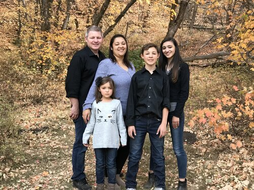
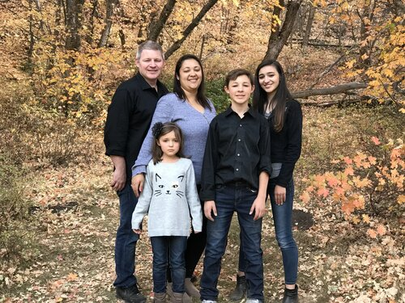
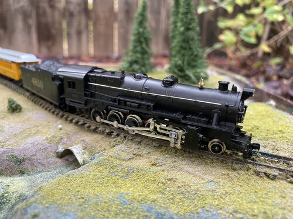
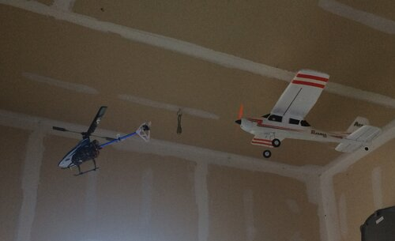

Family
I love to spend time with my family. During the COVID-19 months, we have been able to hang out and watch lots of movies and TV shows. When we are able we will get back out to doing more things away form the house.
I love to spend time with my family. During the COVID-19 months, we have been able to hang out and watch lots of movies and TV shows. When we are able we will get back out to doing more things away form the house.
I love to model and run trains. Watching a train can be mesmerising. If you don't belive me, the next time you have a train show in your area, check it out.
I love to fly. I cannot afford a pilots license, nor can I put forth the time it takes to get one. So I settled on the model route. Getting out and fying helps feel the thrill of actually being up in the air, especially when there is a camera onboard.
